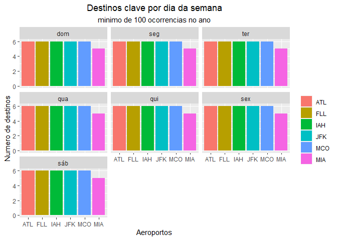

O objetivo desse pacote é servir de repositório para as análises do TCC do curso de R4DS2 da curso-R, turma de abril de 2021.
Instalação
Esse pacote tem como subproduto de suas analises algumas funções. Para saber mais sobre elas, instale o pacote e leia a documentação.
# install.packages("devtools")
devtools::install_github("mendoncalf/tccR4ds2")Por qual aeroporto devo chegar aos EUA?
Segundo a postagem do site passageiro de primeira os aeroportos nos EUA que mais recebem voos do Brasil são: Miami (MIA), Orlando (MCO), Nova York (JFK), Atlanta (ATL), Houston (IAH) e Fort Lauderdale (FLL).
Nesse contexto, nos propomos a analisar quais desses aeroportos seria a melhor opção para um Brasileiro chegar aos EUA. Ignorando parâmetros de preço de passagem aérea, e usando as bases de dados do pacote anyflights, vamos avaliar a performance desses 6 aeroportos com base em atrasos, número de companhias aéreas, oferta de destinos, e conexões com destinos chave. Foram considerados apenas os voos do ano de 2019 para a análise, por serem os dados mais recentes sem impacto da pandemia de COVID-19.
1 - Atrasos
Considerando os atrasos de partida, ou seja, a diferença entre o horário programado para a saída do aeroporto de interesse e a real saída, vemos que Atlanta (ATL) se destaca, sendo o aeroporto com menor percentual de decolagens atrasadas, seguido por Miami (MIA) e Nova York (JFK)

Esses mesmos voos podem ser olhados sob a perspectiva do atraso em seus destinos, que de fato é o que importa ao passageiro. A correlação é alta, claro, uma vez que se um voo decolou com atraso, possivelmente chegará ao seu destino com atraso. Sendo assim, novamente Atlanta (ATL) leva a melhor, ainda seguido por Miami (MIA) e Nova York (JFK)

Vendo o atraso sobre a ótica de um serie temporal, pouco muda em relação a posição relativa dos aeroportos. No entanto, é interessante notar que a maior quantidade de atrasos ocorre entre Maio a Agosto (Verão americano), possivelmente um período de intensificação das viagens aéreas. Por outro lado, menos atraso ocorre nos meses de Setembro a Novembro. É sempre bom lembrar que esses dados são apenas de 2019, assim particularidades desse ano podem viesar esse comportamento em relação aos dados históricos.

2 - Número de companhas aéreas
Novamente Atlanta (ATL) se sai melhor, com sedo o aeroporto com mais empresas aéreas operando voos, sendo 15 no total seguido por Houston (IAH) e Fort Lauderdale (FLL)

3 - Oferta de destinos
Atlanta (ATL) segue superando os adversários e leva mais uma, agora ele também é o aeroporto com maior quantidade de destinos domestico regulares, em todos os dias da semana. São mais de 100 destinos dentro dos EUA! Em segundo lugar temos Houston (IAH) e em terceiro vem Orlando (MCO).

4 - Oferta de destinos chave
Destinos ao montes são otimos, no entanto, os Brasileiros procuram cidades muito especificas nos EUA. Parte dessas cidades claro são as mesmas cidades dessa análise, mas existem outras tão procuradas quanto, mas que a frequencia de voos diretos do Brasil é baixa. Novamente fomos a internet e após algumas pesquisas selecionamos outras 6 cidades não contempladas na lista de cidades com mais voos diretos do Brasil. E agora queremos saber se nossos 6 aeroportos favoritos possuem voos de conexão para essas cidades.
Os destinos chave são: Los Angeles, Las Vegas, São Francisco, Boston, Chicago e por fim a capital Washington D.C.
Nesse quesito quase todos os aeroportos empatam, apenas Miami (MIA) falha em um dos destinos. Normal, afinal todas essas são grandes cidades e é esperado que os principais aeroportos se conectem a elas.

Placar Final
1° Lugar: Atlanta (ATL) - 12 pontos
2° Lugar: Houston (IAH) - 7 pontos
3° Lugar: Todos os demais empatam - 4 pontos
Interessante notar que por si só Atlanta e Houston não estão entre as cidades preferidas dos Brasileiros, mesmo assim, possuem excelente aeroportos. Não obstante, o aeroporto de Atlanta é considerado o maior do mundo em numero de passageiros, e um dos mais eficientes também, como nós mesmos pudemos comprovar. Assim, mesmo que não seja seu destino final, pode ser que você passe por eles.
Extra - Curiosidade: maiores atrasos e antecipações de cada aeroporto
Já pensou esperar um voo por mais de um dia? Pois é, isso acontece! Investigando os maiores atrasos de cada aeroporto, em 4 dos 6 existiram situações de atrasos maiores que 24h, sendo a maior ocorrido no aeroporto de Orlando num voo com destino a Dallas no Texas, com 1 dia e 5 horas de atraso.
| origem | destino | data | atraso_partida |
|---|---|---|---|
| MCO | DFW | 2019-03-30 | 1d 5H 2M 0S |
| IAH | BOS | 2019-12-02 | 1d 2H 40M 0S |
| JFK | HNL | 2019-02-19 | 1d 1H 36M 0S |
| ATL | IAH | 2019-02-03 | 1d 0H 20M 0S |
| FLL | CLT | 2019-04-14 | 23H 46M 0S |
| MIA | EWR | 2019-08-07 | 22H 41M 0S |
Já o contrario, ou seja, ter tudo pronto para a partida antes do horário, também acontece. O nosso campeão novamente não nos decepciona e crava mais uma, tendo para si o voo de maior antecipação. Um voo de Atlanta com destino a Mobile no Alabama saiu quase 1 hora antes do horário previsto. É quase o mesmo tempo de voo entre as duas cidades!
| origem | destino | data | antecipacao_partida |
|---|---|---|---|
| ATL | MOB | 2019-04-11 | -52M 0S |
| FLL | DTW | 2019-09-02 | -43M 0S |
| MCO | ATL | 2019-04-08 | -30M 0S |
| MIA | RDU | 2019-10-10 | -26M 0S |
| JFK | BUF | 2019-01-29 | -24M 0S |
| JFK | RIC | 2019-05-21 | -24M 0S |
| IAH | PHL | 2019-07-20 | -24M 0S |